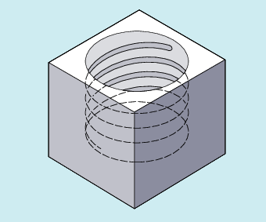

The helical interpolation enables, for example, the production of threads or oil grooves.
With helical interpolation, two motions are superimposed and executed in parallel:
A plane circular motion on which
A vertical linear motion is superimposed.
G2/G3 X… Y… Z… I… J… K… TURN=
G2/G3 X… Y… Z… I… J… K… TURN=
G2/G3 AR=… I… J… K… TURN=
G2/G3 AR=… X… Y… Z… TURN=
G2/G3 AP… RP=… TURN=
| Travel on a circular path in clockwise direction |
| Travel on a circular path in counter-clockwise direction |
| End point in Cartesian coordinates |
| Circle center point in Cartesian coordinates |
| Opening angle |
| Number of additional circular passes in the range from 0 to 999 |
| Polar angle |
| Polar radius |
| Note |
G2 and G3 are modal. |
| Program code | Comment |
|---|---|
| N10 G17 G0 X27.5 Y32.99 Z3 | ; Approach the starting position. |
| N20 G1 Z-5 F50 | ; Feed of the tool. |
| N30 G3 X20 Y5 Z-20 I=AC(20) J=AC(20) TURN=2 | ; Helix with the specifications: Execute two full circles after the starting position, then travel to end point. |
| N40 M30 | ; End of program |
See also:
Helical interpolation (G2/G3, TURN): Further information